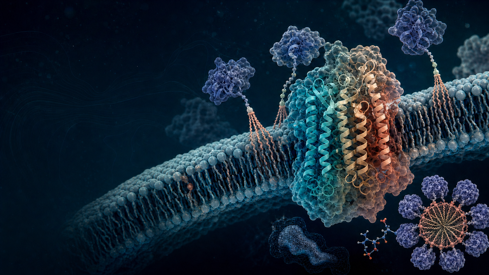

Molecule
Resolve protein structure, motion, and interactions at molecular detail.

Structure · Function · Biomaterials
We investigate the role of proteins in bacterial physiology, and we leverage these insights to design novel biomaterials.
Explore our workOur approach
Bacterial proteins do not work alone. Their structures shift, their environments matter, and their interactions ripple outward into physiology. We bring biochemistry, biology, microbiology, and immunology together to see the whole system.
Our research philosophyResolve protein structure, motion, and interactions at molecular detail.
Connect molecular behavior to membranes, pathways, and bacterial physiology.
Translate mechanistic insight into new tools and therapeutic directions.
Research programs
Protein biophysics
How do structure and motion give rise to function? We characterize bacterial proteins at molecular resolution to understand how they recognize partners, bind substrates, and perform their cellular roles.
Cellular context
Bacterial membranes are busy, complex environments. We study membrane proteins and lipoproteins to learn how location, lipids, and neighboring molecules tune protein behavior.
Translation
Deep mechanism creates new possibilities. We use what we learn about bacterial systems to identify intervention points and build a foundation for future therapeutic strategies.
See the science